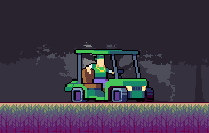

Sobre o Jogo

Pixel Gang é um jogo 2D narrativo com visual pixelado e cores vibrantes, ambientado em uma cidade urbana estilizada. Focado na criatividade e improviso, os jogadores criam histórias rápidas e cheias de personalidade. Em uma dessas histórias, acompanhamos MC Dog, ex-líder respeitado da Vila Nova, que retorna após dez anos de prisão e encontra seu bairro dominado pela gangue dos Ballas. Com a ajuda de Tio Roque, mentor e estrategista da velha guarda, ele inicia a retomada do território. A reconquista da Rua 17 marca o início da virada — e o recado é claro: “A VILA NÃO ESQUECE”. Com estilo, memória e respeito, a quebrada começa a respirar de novo.
Sobre mim

Meu nome é Gabriel Roberto Zafani, tenho 18 anos e carrego o sonho de me tornar streamer e, um dia, viver fora do país. Desde a infância, os jogos sempre fizeram parte da minha vida, trazendo momentos de diversão e conexão com os amigos. Além disso, sou apaixonado por vôlei, um hobby que cultivo com dedicação desde pequeno, sempre buscando evoluir.